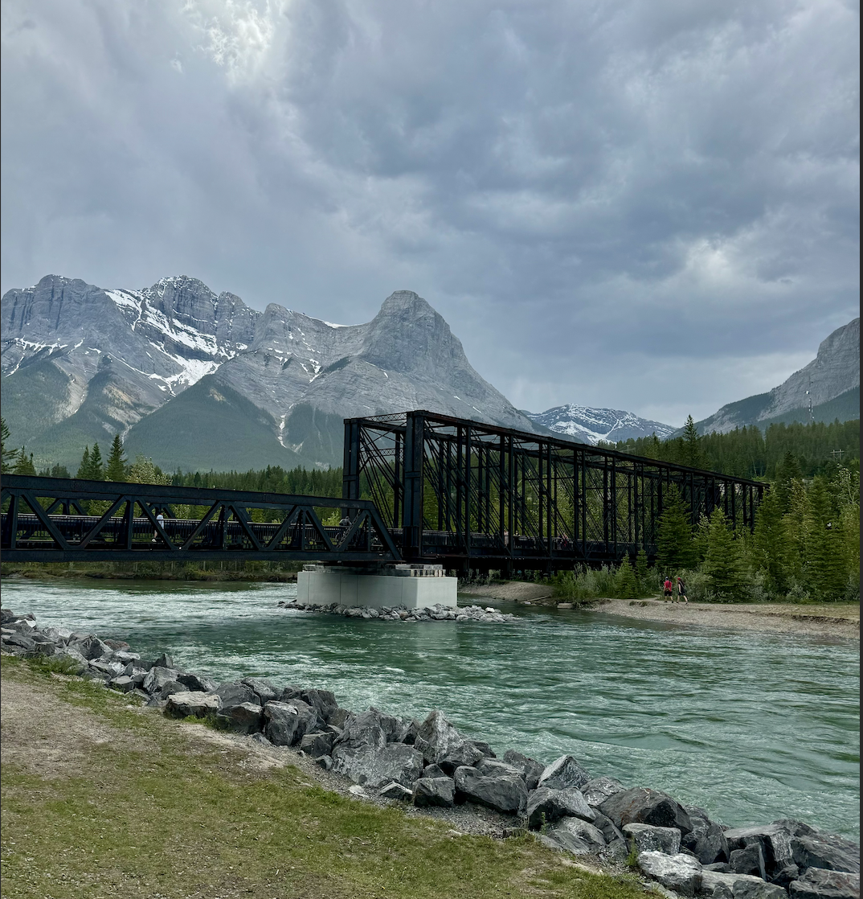
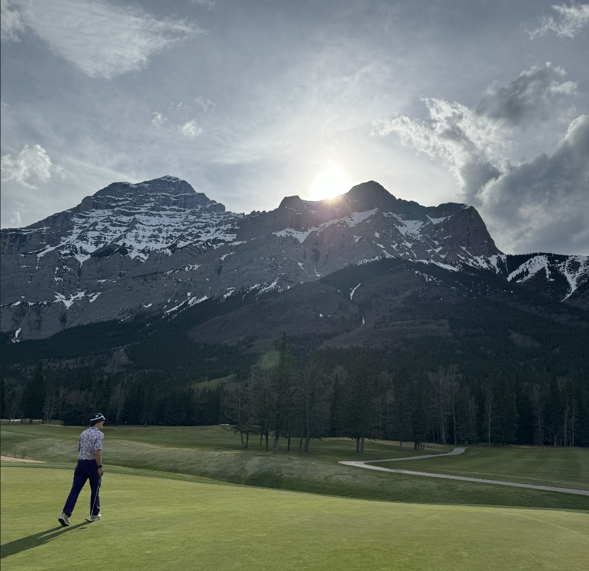

BANFF
Banff, located in the Canadian Rockies of Alberta, is a stunning resort town known for its breathtaking mountain scenery. As part of Banff National Park, it offers world class hiking, skiing, and wildlife viewing. Within there are iconic spots like Lake Louise, Moraine Lake, and the Banff Hot Springs. The town itself is charming with many luxuriouse shops eaterys and hotels. Whether you’re exploring the rugged backcountry or simply soaking in the beauty of the surrounding peaks, Banff is a must-visit destination for nature lovers and adventure seekers alike.
CANMORE
In the heart of the Canadian Rockies, Canmore is a picturesque mountain town, offering a perfect blend of outdoor adventure and small-town charm. Known for its stunning scenery, world-class hiking, and vibrant arts scene. Canmore attracts visitors seeking an alternative to the busy calgary. The town is surrounded by breathtaking peaks such as Haling and the three sisters.Offering a cosy town full of cafés, craft breweries, and boutique shops. With its laid-back atmosphere and easy access to nature, Canmore is an ideal destination for both thrill-seekers and those looking to unwind in the mountains.
KANANASKIS
Kananaskis Country is a vast and rugged outdoor playground in Alberta. Offering a quieter, more remote alternative to Banff and Canmore. Home to many alpine lakes and dense forests this region is perfect for hiking, camping, and wildlife spotting. Popular spots like Kananaskis Nordic Spa,the kananaskis golf course, and the scenic Highwood Pass make it a year-round retreat for adventure lovers. In the winter, Kananaskis turns into a wonderland for cross-country skiing and snowshoeing, while summer brings endless opportunities for backcountry exploration. With its unspoiled wilderness and fewer crowds, Kananaskis is a hidden gem for those looking to connect with nature.
